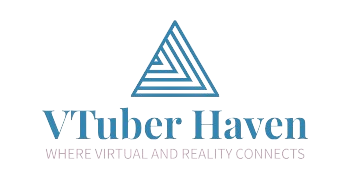

About Us  Welcome to VTuber Haven: Merchandise and Social Spotlights, where the vibrant world of Virtual YouTubing comes to life in a unique blend of creativity, community, and commerce. Our platform is not just a website; it's a haven for VTubers and enthusiasts alike, fostering a welcoming environment for both seasoned creators and those just stepping into the mesmerizing realm of virtual content creation. Our Mission: • At VTuber Haven, we understand the pulse of the VTubing community, recognizing its ever-growing diversity and the need for a centralized hub that caters to the needs of VTubers and their fans. Our mission is to bridge the gap between creators and viewers, providing a seamless space where virtual personalities can thrive, connect, and showcase their talents. • Whether you're a seasoned VTuber, a newcomer exploring the wonders of virtual content creation, or a dedicated viewer seeking the latest and greatest in the VTubing universe, VTuber Haven is your destination. • One of the core pillars of our platform is the emphasis on merchandise. We believe that every VTuber has a unique identity that deserves to be celebrated and shared. Our Merchandise section is a curated marketplace that allows VTubers to showcase and sell their exclusive branded products, from custom-designed clothing and accessories to digital art prints and beyond. VTuber Haven serves as the ultimate virtual storefront, enabling creators to monetize their artistry and fans to support their favorite VTubers in style. • In addition to our vibrant marketplace, VTuber Haven is a Social Spotlights hub, dedicated to showcasing the best and brightest talents in the VTubing community. Our platform features in-depth interviews, live-stream highlights, and behind-the-scenes glimpses into the lives of VTubers. We aim to elevate the profiles of both established and emerging VTubers, offering a spotlight that extends beyond the virtual stage and into the hearts of their fanbase. • VTuber Haven is more than just a website; it's a community-driven initiative. We actively encourage collaboration, networking, and mutual support among VTubers. Our platform will host forums, discussion boards, and events that bring creators and fans together, fostering an inclusive and interactive space for everyone to share their passion for virtual content creation. • As the VTubing landscape continues to evolve, VTuber Haven remains committed to evolving alongside it. We strive to be the go-to destination for VTubers and viewers alike, providing a haven where creativity knows no bounds, merchandise tells a story, and social spotlights shine a light on the incredible talents within the VTubing community. Join us at VTuber Haven, where the virtual world comes to life, and the VTubing community finds its home. Our Team: Charles Melvin G. Ramirez - Head Developer